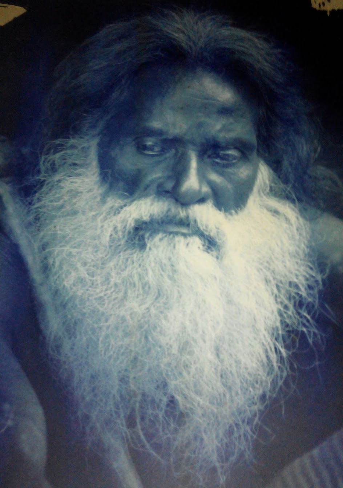

维达族社区

“维达人”，最早的居民
维达人是斯里兰卡最古老的原住民之一，在斯里兰卡的森林中生活了数千年，他们的知识靠口耳相传，而非文字记录。
他们身着传统服饰，常常带着一把礼仪斧，至今仍保留着射箭、采集野生蜂蜜等祖传技艺，这些技艺养育了这个群体数千年。
从森林到传统，旅程就在前方。选择一个主题，或把几个主题组合成一次旅行。

美语出生在一个以考古为生活方式的家庭，从小与古代文明为伴。她父亲曾与斯里兰卡多位著名考古学家共事，包括 Siran Deraniyagala、Roland Silva 和 Senake Bandaranayake。跟随父亲的旅程，感受他对过去默默的敬意，她很早就找到了许多人一生都未曾找到的东西：对一片土地及其历史真正的归属感。
她在圣地、残破的要塞和比任何课本都承载着更多记忆的风景中长大。她从一开始就学会把斯里兰卡看作一个仍在讲述中的鲜活故事，而不是一个旅游目的地。
好奇心带着她走出遗址和岩刻，走进雨林、潟湖、国家公园，以及千百年来与岛上文明共存的古老生态系统。
如今，她为每一次旅程带来难得的视角：连接古老遗产与鲜活自然，连接历史与生态，连接人类的故事与荒野的故事。
阅读完整故事“斯里兰卡不只是一座岛屿。它是一座关于自然、关于人、关于时间的活博物馆。”
美语
旅途中遇到的人、手艺和动物。阅读全部野外笔记。

维达人是斯里兰卡最古老的原住民之一，在斯里兰卡的森林中生活了数千年，他们的知识靠口耳相传，而非文字记录。
他们身着传统服饰，常常带着一把礼仪斧，至今仍保留着射箭、采集野生蜂蜜等祖传技艺，这些技艺养育了这个群体数千年。

一位肉桂农坐在自家门外，用传统手艺剥制锡兰肉桂。
她用专门的工具刮去外层树皮，再从每根枝条上剥下芳香的内层树皮。这是一门代代相传的精细手艺。